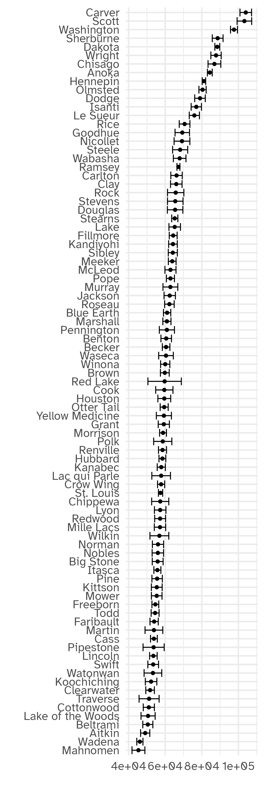

APIs
Day 19
Carleton College
Stat 220 - Spring 2025
What is an API?
“API stands for Application Programming Interface. It is a set of rules and protocols that lets different software applications communicate with each other.
In this class, we’ll use APIs to allow R to communicate with websites. These APIs focus on transmitting raw data, rather than images, fonts, etc. that humans interact with when they visit the page.
How do we use them?
In this class, we’re going to cover two ways to access API’s:
- with a wrapper R package
- directly with httr requests
API wrapper packages
- To find a wrapper package search for “R package”, plus the name of the website, plus “data”
- “R package nytimes data”
- “R package reddit data”
- “R package weather.com data”
Example: nytimes data

R functions for accessing New York Times’ APIs
Functionality for “article search”, “most popular”, and “Times newswire” APIs.
nyt_search
Allows R to interact with the NY Times
Output is designed for computers to read
List of 5
$ :List of 10
..$ url : chr "http://api.nytimes.com/svc/search/v2/articlesearch.json?q=minnesota&sort=newest&end_date=20240101&api-key=5pk1D"| __truncated__
..$ status_code: int 200
..$ headers :List of 14
.. ..$ date : chr "Wed, 19 Feb 2025 02:24:56 GMT"
.. ..$ content-type : chr "application/json"
.. ..$ content-length : chr "227759"
.. ..$ connection : chr "keep-alive"
.. ..$ server : chr "nginx"
.. ..$ vary : chr "Origin"
.. ..$ vary : chr "Access-Control-Request-Method"
.. ..$ vary : chr "Access-Control-Request-Headers"
.. ..$ via : chr "1.1 google"
.. ..$ alt-svc : chr "h3=\":443\"; ma=2592000,h3-29=\":443\"; ma=2592000"
.. ..$ access-control-allow-headers : chr "Accept, Content-Type, Origin, X-Forwarded-For, X-Prototype-Version, X-Requested-With"
.. ..$ access-control-allow-methods : chr "GET, OPTIONS"
.. ..$ access-control-allow-origin : chr "*"
.. ..$ access-control-expose-headers: chr "Content-Length, X-JSON"
.. ..- attr(*, "class")= chr [1:2] "insensitive" "list"
..$ all_headers:List of 1
.. ..$ :List of 3
.. .. ..$ status : int 200
.. .. ..$ version: chr "HTTP/1.1"
.. .. ..$ headers:List of 14
.. .. .. ..$ date : chr "Wed, 19 Feb 2025 02:24:56 GMT"
.. .. .. ..$ content-type : chr "application/json"
.. .. .. ..$ content-length : chr "227759"
.. .. .. ..$ connection : chr "keep-alive"
.. .. .. ..$ server : chr "nginx"
.. .. .. ..$ vary : chr "Origin"
.. .. .. ..$ vary : chr "Access-Control-Request-Method"
.. .. .. ..$ vary : chr "Access-Control-Request-Headers"
.. .. .. ..$ via : chr "1.1 google"
.. .. .. ..$ alt-svc : chr "h3=\":443\"; ma=2592000,h3-29=\":443\"; ma=2592000"
.. .. .. ..$ access-control-allow-headers : chr "Accept, Content-Type, Origin, X-Forwarded-For, X-Prototype-Version, X-Requested-With"
.. .. .. ..$ access-control-allow-methods : chr "GET, OPTIONS"
.. .. .. ..$ access-control-allow-origin : chr "*"
.. .. .. ..$ access-control-expose-headers: chr "Content-Length, X-JSON"
.. .. .. ..- attr(*, "class")= chr [1:2] "insensitive" "list"
..$ cookies :'data.frame': 0 obs. of 7 variables:
.. ..$ domain : logi(0)
.. ..$ flag : logi(0)
.. ..$ path : logi(0)
.. ..$ secure : logi(0)
.. ..$ expiration: 'POSIXct' num(0)
.. ..$ name : logi(0)
.. ..$ value : logi(0)
..$ content : raw [1:227759] 7b 22 73 74 ...
..$ date : POSIXct[1:1], format: "2025-02-19 02:24:56"
..$ times : Named num [1:6] 0 0.0263 0.0735 0.0735 0.7194 ...
.. ..- attr(*, "names")= chr [1:6] "redirect" "namelookup" "connect" "pretransfer" ...
..$ request :List of 7
.. ..$ method : chr "GET"
.. ..$ url : chr "http://api.nytimes.com/svc/search/v2/articlesearch.json?q=minnesota&sort=newest&end_date=20240101&api-key=5pk1D"| __truncated__
.. ..$ headers : Named chr "application/json, text/xml, application/xml, */*"
.. .. ..- attr(*, "names")= chr "Accept"
.. ..$ fields : NULL
.. ..$ options :List of 2
.. .. ..$ useragent: chr "libcurl/8.11.1 r-curl/6.2.0 httr/1.4.7"
.. .. ..$ httpget : logi TRUE
.. ..$ auth_token: NULL
.. ..$ output : list()
.. .. ..- attr(*, "class")= chr [1:2] "write_memory" "write_function"
.. ..- attr(*, "class")= chr "request"
..$ handle :Class 'curl_handle' <externalptr>
..- attr(*, "class")= chr "response"
$ :List of 10
..$ url : chr "http://api.nytimes.com/svc/search/v2/articlesearch.json?q=minnesota&page=1&sort=newest&end_date=20240101&api-ke"| __truncated__
..$ status_code: int 200
..$ headers :List of 14
.. ..$ date : chr "Wed, 19 Feb 2025 02:24:57 GMT"
.. ..$ content-type : chr "application/json"
.. ..$ content-length : chr "221487"
.. ..$ connection : chr "keep-alive"
.. ..$ server : chr "nginx"
.. ..$ vary : chr "Origin"
.. ..$ vary : chr "Access-Control-Request-Method"
.. ..$ vary : chr "Access-Control-Request-Headers"
.. ..$ via : chr "1.1 google"
.. ..$ alt-svc : chr "h3=\":443\"; ma=2592000,h3-29=\":443\"; ma=2592000"
.. ..$ access-control-allow-headers : chr "Accept, Content-Type, Origin, X-Forwarded-For, X-Prototype-Version, X-Requested-With"
.. ..$ access-control-allow-methods : chr "GET, OPTIONS"
.. ..$ access-control-allow-origin : chr "*"
.. ..$ access-control-expose-headers: chr "Content-Length, X-JSON"
.. ..- attr(*, "class")= chr [1:2] "insensitive" "list"
..$ all_headers:List of 1
.. ..$ :List of 3
.. .. ..$ status : int 200
.. .. ..$ version: chr "HTTP/1.1"
.. .. ..$ headers:List of 14
.. .. .. ..$ date : chr "Wed, 19 Feb 2025 02:24:57 GMT"
.. .. .. ..$ content-type : chr "application/json"
.. .. .. ..$ content-length : chr "221487"
.. .. .. ..$ connection : chr "keep-alive"
.. .. .. ..$ server : chr "nginx"
.. .. .. ..$ vary : chr "Origin"
.. .. .. ..$ vary : chr "Access-Control-Request-Method"
.. .. .. ..$ vary : chr "Access-Control-Request-Headers"
.. .. .. ..$ via : chr "1.1 google"
.. .. .. ..$ alt-svc : chr "h3=\":443\"; ma=2592000,h3-29=\":443\"; ma=2592000"
.. .. .. ..$ access-control-allow-headers : chr "Accept, Content-Type, Origin, X-Forwarded-For, X-Prototype-Version, X-Requested-With"
.. .. .. ..$ access-control-allow-methods : chr "GET, OPTIONS"
.. .. .. ..$ access-control-allow-origin : chr "*"
.. .. .. ..$ access-control-expose-headers: chr "Content-Length, X-JSON"
.. .. .. ..- attr(*, "class")= chr [1:2] "insensitive" "list"
..$ cookies :'data.frame': 0 obs. of 7 variables:
.. ..$ domain : logi(0)
.. ..$ flag : logi(0)
.. ..$ path : logi(0)
.. ..$ secure : logi(0)
.. ..$ expiration: 'POSIXct' num(0)
.. ..$ name : logi(0)
.. ..$ value : logi(0)
..$ content : raw [1:221487] 7b 22 73 74 ...
..$ date : POSIXct[1:1], format: "2025-02-19 02:24:57"
..$ times : Named num [1:6] 0 0.000179 0 0.00039 0.303562 ...
.. ..- attr(*, "names")= chr [1:6] "redirect" "namelookup" "connect" "pretransfer" ...
..$ request :List of 7
.. ..$ method : chr "GET"
.. ..$ url : chr "http://api.nytimes.com/svc/search/v2/articlesearch.json?q=minnesota&page=1&sort=newest&end_date=20240101&api-ke"| __truncated__
.. ..$ headers : Named chr "application/json, text/xml, application/xml, */*"
.. .. ..- attr(*, "names")= chr "Accept"
.. ..$ fields : NULL
.. ..$ options :List of 2
.. .. ..$ useragent: chr "libcurl/8.11.1 r-curl/6.2.0 httr/1.4.7"
.. .. ..$ httpget : logi TRUE
.. ..$ auth_token: NULL
.. ..$ output : list()
.. .. ..- attr(*, "class")= chr [1:2] "write_memory" "write_function"
.. ..- attr(*, "class")= chr "request"
..$ handle :Class 'curl_handle' <externalptr>
..- attr(*, "class")= chr "response"
$ :List of 10
..$ url : chr "http://api.nytimes.com/svc/search/v2/articlesearch.json?q=minnesota&page=2&sort=newest&end_date=20240101&api-ke"| __truncated__
..$ status_code: int 200
..$ headers :List of 14
.. ..$ date : chr "Wed, 19 Feb 2025 02:24:59 GMT"
.. ..$ content-type : chr "application/json"
.. ..$ content-length : chr "215044"
.. ..$ connection : chr "keep-alive"
.. ..$ server : chr "nginx"
.. ..$ vary : chr "Origin"
.. ..$ vary : chr "Access-Control-Request-Method"
.. ..$ vary : chr "Access-Control-Request-Headers"
.. ..$ via : chr "1.1 google"
.. ..$ alt-svc : chr "h3=\":443\"; ma=2592000,h3-29=\":443\"; ma=2592000"
.. ..$ access-control-allow-headers : chr "Accept, Content-Type, Origin, X-Forwarded-For, X-Prototype-Version, X-Requested-With"
.. ..$ access-control-allow-methods : chr "GET, OPTIONS"
.. ..$ access-control-allow-origin : chr "*"
.. ..$ access-control-expose-headers: chr "Content-Length, X-JSON"
.. ..- attr(*, "class")= chr [1:2] "insensitive" "list"
..$ all_headers:List of 1
.. ..$ :List of 3
.. .. ..$ status : int 200
.. .. ..$ version: chr "HTTP/1.1"
.. .. ..$ headers:List of 14
.. .. .. ..$ date : chr "Wed, 19 Feb 2025 02:24:59 GMT"
.. .. .. ..$ content-type : chr "application/json"
.. .. .. ..$ content-length : chr "215044"
.. .. .. ..$ connection : chr "keep-alive"
.. .. .. ..$ server : chr "nginx"
.. .. .. ..$ vary : chr "Origin"
.. .. .. ..$ vary : chr "Access-Control-Request-Method"
.. .. .. ..$ vary : chr "Access-Control-Request-Headers"
.. .. .. ..$ via : chr "1.1 google"
.. .. .. ..$ alt-svc : chr "h3=\":443\"; ma=2592000,h3-29=\":443\"; ma=2592000"
.. .. .. ..$ access-control-allow-headers : chr "Accept, Content-Type, Origin, X-Forwarded-For, X-Prototype-Version, X-Requested-With"
.. .. .. ..$ access-control-allow-methods : chr "GET, OPTIONS"
.. .. .. ..$ access-control-allow-origin : chr "*"
.. .. .. ..$ access-control-expose-headers: chr "Content-Length, X-JSON"
.. .. .. ..- attr(*, "class")= chr [1:2] "insensitive" "list"
..$ cookies :'data.frame': 0 obs. of 7 variables:
.. ..$ domain : logi(0)
.. ..$ flag : logi(0)
.. ..$ path : logi(0)
.. ..$ secure : logi(0)
.. ..$ expiration: 'POSIXct' num(0)
.. ..$ name : logi(0)
.. ..$ value : logi(0)
..$ content : raw [1:215044] 7b 22 73 74 ...
..$ date : POSIXct[1:1], format: "2025-02-19 02:24:59"
..$ times : Named num [1:6] 0 0.000098 0 0.000211 0.336513 ...
.. ..- attr(*, "names")= chr [1:6] "redirect" "namelookup" "connect" "pretransfer" ...
..$ request :List of 7
.. ..$ method : chr "GET"
.. ..$ url : chr "http://api.nytimes.com/svc/search/v2/articlesearch.json?q=minnesota&page=2&sort=newest&end_date=20240101&api-ke"| __truncated__
.. ..$ headers : Named chr "application/json, text/xml, application/xml, */*"
.. .. ..- attr(*, "names")= chr "Accept"
.. ..$ fields : NULL
.. ..$ options :List of 2
.. .. ..$ useragent: chr "libcurl/8.11.1 r-curl/6.2.0 httr/1.4.7"
.. .. ..$ httpget : logi TRUE
.. ..$ auth_token: NULL
.. ..$ output : list()
.. .. ..- attr(*, "class")= chr [1:2] "write_memory" "write_function"
.. ..- attr(*, "class")= chr "request"
..$ handle :Class 'curl_handle' <externalptr>
..- attr(*, "class")= chr "response"
$ :List of 10
..$ url : chr "http://api.nytimes.com/svc/search/v2/articlesearch.json?q=minnesota&page=3&sort=newest&end_date=20240101&api-ke"| __truncated__
..$ status_code: int 200
..$ headers :List of 14
.. ..$ date : chr "Wed, 19 Feb 2025 02:25:00 GMT"
.. ..$ content-type : chr "application/json"
.. ..$ content-length : chr "219733"
.. ..$ connection : chr "keep-alive"
.. ..$ server : chr "nginx"
.. ..$ vary : chr "Origin"
.. ..$ vary : chr "Access-Control-Request-Method"
.. ..$ vary : chr "Access-Control-Request-Headers"
.. ..$ via : chr "1.1 google"
.. ..$ alt-svc : chr "h3=\":443\"; ma=2592000,h3-29=\":443\"; ma=2592000"
.. ..$ access-control-allow-headers : chr "Accept, Content-Type, Origin, X-Forwarded-For, X-Prototype-Version, X-Requested-With"
.. ..$ access-control-allow-methods : chr "GET, OPTIONS"
.. ..$ access-control-allow-origin : chr "*"
.. ..$ access-control-expose-headers: chr "Content-Length, X-JSON"
.. ..- attr(*, "class")= chr [1:2] "insensitive" "list"
..$ all_headers:List of 1
.. ..$ :List of 3
.. .. ..$ status : int 200
.. .. ..$ version: chr "HTTP/1.1"
.. .. ..$ headers:List of 14
.. .. .. ..$ date : chr "Wed, 19 Feb 2025 02:25:00 GMT"
.. .. .. ..$ content-type : chr "application/json"
.. .. .. ..$ content-length : chr "219733"
.. .. .. ..$ connection : chr "keep-alive"
.. .. .. ..$ server : chr "nginx"
.. .. .. ..$ vary : chr "Origin"
.. .. .. ..$ vary : chr "Access-Control-Request-Method"
.. .. .. ..$ vary : chr "Access-Control-Request-Headers"
.. .. .. ..$ via : chr "1.1 google"
.. .. .. ..$ alt-svc : chr "h3=\":443\"; ma=2592000,h3-29=\":443\"; ma=2592000"
.. .. .. ..$ access-control-allow-headers : chr "Accept, Content-Type, Origin, X-Forwarded-For, X-Prototype-Version, X-Requested-With"
.. .. .. ..$ access-control-allow-methods : chr "GET, OPTIONS"
.. .. .. ..$ access-control-allow-origin : chr "*"
.. .. .. ..$ access-control-expose-headers: chr "Content-Length, X-JSON"
.. .. .. ..- attr(*, "class")= chr [1:2] "insensitive" "list"
..$ cookies :'data.frame': 0 obs. of 7 variables:
.. ..$ domain : logi(0)
.. ..$ flag : logi(0)
.. ..$ path : logi(0)
.. ..$ secure : logi(0)
.. ..$ expiration: 'POSIXct' num(0)
.. ..$ name : logi(0)
.. ..$ value : logi(0)
..$ content : raw [1:219733] 7b 22 73 74 ...
..$ date : POSIXct[1:1], format: "2025-02-19 02:25:00"
..$ times : Named num [1:6] 0 0.000084 0 0.000296 0.370724 ...
.. ..- attr(*, "names")= chr [1:6] "redirect" "namelookup" "connect" "pretransfer" ...
..$ request :List of 7
.. ..$ method : chr "GET"
.. ..$ url : chr "http://api.nytimes.com/svc/search/v2/articlesearch.json?q=minnesota&page=3&sort=newest&end_date=20240101&api-ke"| __truncated__
.. ..$ headers : Named chr "application/json, text/xml, application/xml, */*"
.. .. ..- attr(*, "names")= chr "Accept"
.. ..$ fields : NULL
.. ..$ options :List of 2
.. .. ..$ useragent: chr "libcurl/8.11.1 r-curl/6.2.0 httr/1.4.7"
.. .. ..$ httpget : logi TRUE
.. ..$ auth_token: NULL
.. ..$ output : list()
.. .. ..- attr(*, "class")= chr [1:2] "write_memory" "write_function"
.. ..- attr(*, "class")= chr "request"
..$ handle :Class 'curl_handle' <externalptr>
..- attr(*, "class")= chr "response"
$ :List of 10
..$ url : chr "http://api.nytimes.com/svc/search/v2/articlesearch.json?q=minnesota&page=4&sort=newest&end_date=20240101&api-ke"| __truncated__
..$ status_code: int 200
..$ headers :List of 14
.. ..$ date : chr "Wed, 19 Feb 2025 02:25:01 GMT"
.. ..$ content-type : chr "application/json"
.. ..$ content-length : chr "226154"
.. ..$ connection : chr "keep-alive"
.. ..$ server : chr "nginx"
.. ..$ vary : chr "Origin"
.. ..$ vary : chr "Access-Control-Request-Method"
.. ..$ vary : chr "Access-Control-Request-Headers"
.. ..$ via : chr "1.1 google"
.. ..$ alt-svc : chr "h3=\":443\"; ma=2592000,h3-29=\":443\"; ma=2592000"
.. ..$ access-control-allow-headers : chr "Accept, Content-Type, Origin, X-Forwarded-For, X-Prototype-Version, X-Requested-With"
.. ..$ access-control-allow-methods : chr "GET, OPTIONS"
.. ..$ access-control-allow-origin : chr "*"
.. ..$ access-control-expose-headers: chr "Content-Length, X-JSON"
.. ..- attr(*, "class")= chr [1:2] "insensitive" "list"
..$ all_headers:List of 1
.. ..$ :List of 3
.. .. ..$ status : int 200
.. .. ..$ version: chr "HTTP/1.1"
.. .. ..$ headers:List of 14
.. .. .. ..$ date : chr "Wed, 19 Feb 2025 02:25:01 GMT"
.. .. .. ..$ content-type : chr "application/json"
.. .. .. ..$ content-length : chr "226154"
.. .. .. ..$ connection : chr "keep-alive"
.. .. .. ..$ server : chr "nginx"
.. .. .. ..$ vary : chr "Origin"
.. .. .. ..$ vary : chr "Access-Control-Request-Method"
.. .. .. ..$ vary : chr "Access-Control-Request-Headers"
.. .. .. ..$ via : chr "1.1 google"
.. .. .. ..$ alt-svc : chr "h3=\":443\"; ma=2592000,h3-29=\":443\"; ma=2592000"
.. .. .. ..$ access-control-allow-headers : chr "Accept, Content-Type, Origin, X-Forwarded-For, X-Prototype-Version, X-Requested-With"
.. .. .. ..$ access-control-allow-methods : chr "GET, OPTIONS"
.. .. .. ..$ access-control-allow-origin : chr "*"
.. .. .. ..$ access-control-expose-headers: chr "Content-Length, X-JSON"
.. .. .. ..- attr(*, "class")= chr [1:2] "insensitive" "list"
..$ cookies :'data.frame': 0 obs. of 7 variables:
.. ..$ domain : logi(0)
.. ..$ flag : logi(0)
.. ..$ path : logi(0)
.. ..$ secure : logi(0)
.. ..$ expiration: 'POSIXct' num(0)
.. ..$ name : logi(0)
.. ..$ value : logi(0)
..$ content : raw [1:226154] 7b 22 73 74 ...
..$ date : POSIXct[1:1], format: "2025-02-19 02:25:01"
..$ times : Named num [1:6] 0 0.000096 0 0.000301 0.321168 ...
.. ..- attr(*, "names")= chr [1:6] "redirect" "namelookup" "connect" "pretransfer" ...
..$ request :List of 7
.. ..$ method : chr "GET"
.. ..$ url : chr "http://api.nytimes.com/svc/search/v2/articlesearch.json?q=minnesota&page=4&sort=newest&end_date=20240101&api-ke"| __truncated__
.. ..$ headers : Named chr "application/json, text/xml, application/xml, */*"
.. .. ..- attr(*, "names")= chr "Accept"
.. ..$ fields : NULL
.. ..$ options :List of 2
.. .. ..$ useragent: chr "libcurl/8.11.1 r-curl/6.2.0 httr/1.4.7"
.. .. ..$ httpget : logi TRUE
.. ..$ auth_token: NULL
.. ..$ output : list()
.. .. ..- attr(*, "class")= chr [1:2] "write_memory" "write_function"
.. ..- attr(*, "class")= chr "request"
..$ handle :Class 'curl_handle' <externalptr>
..- attr(*, "class")= chr "response"
- attr(*, "class")= chr "search"Convert response to tibble
# A tibble: 50 × 19
id abstract byline document_type headline keywords lead_paragraph
<chr> <chr> <chr> <chr> <chr> <chr> <chr>
1 nyt://article… This ye… By Ja… article A New Y… New Yea… It’s the firs…
2 nyt://article… Many st… By Ad… article New Sta… States … A spate of ne…
3 nyt://article… In Chil… By Ja… article Cats Fi… Prisons… Some say they…
4 nyt://interac… Detaile… By Jo… multimedia Week 17… Footbal… Detailed tabl…
5 nyt://article… Maine f… By Je… article Maine J… Preside… Maine on Thur…
6 nyt://article… The Uni… By Ni… article Univers… College… The chancello…
7 nyt://interac… Data sh… By El… multimedia Where M… Immigra… Data shows wh…
8 nyt://article… Private… By Ha… article They’re… Child L… One morning i…
9 nyt://article… The his… By Jo… article The Vir… English… My partner an…
10 nyt://article… Gator t… By Sc… article ‘Fargo’… Televis… After eight e…
# ℹ 40 more rows
# ℹ 12 more variables: multimedia <chr>, news_desk <chr>, print_page <chr>,
# print_section <chr>, pub_date <dttm>, section_name <chr>, snippet <chr>,
# source <chr>, type_of_material <chr>, uri <chr>, web_url <chr>,
# word_count <int>Let’s take a peek at a couple of columns:
# A tibble: 50 × 4
pub_date headline document_type keywords
<dttm> <chr> <chr> <chr>
1 2024-01-01 10:57:10 A New Year’s Energy Boost article New Yea…
2 2024-01-01 08:00:30 New State Laws on Hot-Button Issu… article States …
3 2023-12-31 10:02:32 Cats Filled the Prison. Then the … article Prisons…
4 2023-12-30 05:08:59 Week 17 N.F.L. Playoff Picture: A… multimedia Footbal…
5 2023-12-29 00:01:11 Maine Joins Colorado in Finding T… article Preside…
6 2023-12-28 23:46:06 University Chancellor Fired After… article College…
7 2023-12-28 10:03:05 Where Migrant Children Are Living… multimedia Immigra…
8 2023-12-28 10:02:51 They’re Paid Billions to Root Out… article Child L…
9 2023-12-27 20:00:02 The Virtues of Inauthenticity article English…
10 2023-12-27 04:00:07 ‘Fargo’ Season 5, Episode 7: Not … article Televis…
# ℹ 40 more rowsPros of using an API:
- Provenance: we’ve accessed our data directly from the source and didn’t have to save it in a file format or open it in a different program
- Reproducibility: accessing data via code allows others to reproduce our work
- Customizability: we can generate as specific (or broad) of a dataset as we would like
But, I’ve hidden some steps from you
- Most APIs require you to sign up for an API key
- This allows the website to track who is accessing their data, how many requests they are making, how often they are making them, etc.
- Most APIs (especially if they’re free) are rate limited
- The NYTimes API limits you to 500 requests per day and 5 requests per minute
- This seems like a lot, but you can burn through them quickly when you’re not sure what you’re doing!
- In addition to signing up for a key, we need to make sure R knows how to find it
Census data
- Every ten years, the US Census Bureau runs a census of the US population. The goal is to survey everybody in the country.
- They also run the American Community Survey, which tracks demographic indicators among a random sample of people every 1, 3, or 5 years
- They also collect a variety of other data:
- PSEO
- Household pulse survey
- Health insurance, poverty statistics, business owners, etc.
Importantly, the data is paid for by the public (via taxes) and is available for use by the public
Example call
Storing your API key
- Create a new text file in the same folder as your .rmd
- Copy and paste your census key into the empty file
- Save the file as
census_api_key.txt
Read in the key with the following code:
and tell tidycensus what your API key is with:
Do not commit and push census_api_key.txt to github
Example call
-
geography = "tract": What level of detail to get summary statistics. Other options include “state”, “county”, “combined statistical area”, etc. -
variables = c("B01003_001", "B19013_001"): Which survey questions should we get responses to?
Example
Simple feature collection with 87 features and 6 fields
Geometry type: MULTIPOLYGON
Dimension: XY
Bounding box: xmin: -97.23921 ymin: 43.49937 xmax: -89.49398 ymax: 49.38436
Geodetic CRS: NAD83
First 10 features:
GEOID NAME B01003_001E B01003_001M B19013_001E B19013_001M geometry
1 27167 Wilkin County, Minnesota 6264 NA 56829 5145 MULTIPOLYGON (((-96.79109 4...
2 27133 Rock County, Minnesota 9386 NA 65744 4462 MULTIPOLYGON (((-96.45341 4...
3 27119 Polk County, Minnesota 31384 NA 58682 4958 MULTIPOLYGON (((-97.14638 4...
4 27069 Kittson County, Minnesota 4272 NA 55410 2948 MULTIPOLYGON (((-97.23921 4...
5 27125 Red Lake County, Minnesota 4005 NA 59698 9122 MULTIPOLYGON (((-96.48255 4...
6 27023 Chippewa County, Minnesota 11876 NA 57301 4675 MULTIPOLYGON (((-96.0367 45...
7 27075 Lake County, Minnesota 10571 NA 65201 3145 MULTIPOLYGON (((-91.55375 4...
8 27137 St. Louis County, Minnesota 199499 NA 57480 1156 MULTIPOLYGON (((-93.09802 4...
9 27061 Itasca County, Minnesota 45180 NA 55744 1908 MULTIPOLYGON (((-94.41896 4...
10 27145 Stearns County, Minnesota 159788 NA 65244 1675 MULTIPOLYGON (((-95.13964 4...Example

More info about how census/ACS data is reported
https://www.census.gov/acs/www/data/data-tables-and-tools/subject-tables/
Searching for variables
Getting variables from the Census or ACS requires knowing the variable ID - and there are thousands of these IDs across the different Census files.
# A tibble: 27,850 × 4
name label concept geography
<chr> <chr> <chr> <chr>
1 B01001A_001 Estimate!!Total: SEX BY AGE (W… tract
2 B01001A_002 Estimate!!Total:!!Male: SEX BY AGE (W… tract
3 B01001A_003 Estimate!!Total:!!Male:!!Under 5 years SEX BY AGE (W… tract
4 B01001A_004 Estimate!!Total:!!Male:!!5 to 9 years SEX BY AGE (W… tract
5 B01001A_005 Estimate!!Total:!!Male:!!10 to 14 years SEX BY AGE (W… tract
6 B01001A_006 Estimate!!Total:!!Male:!!15 to 17 years SEX BY AGE (W… tract
7 B01001A_007 Estimate!!Total:!!Male:!!18 and 19 years SEX BY AGE (W… tract
8 B01001A_008 Estimate!!Total:!!Male:!!20 to 24 years SEX BY AGE (W… tract
9 B01001A_009 Estimate!!Total:!!Male:!!25 to 29 years SEX BY AGE (W… tract
10 B01001A_010 Estimate!!Total:!!Male:!!30 to 34 years SEX BY AGE (W… tract
# ℹ 27,840 more rowsThe two we used were:
But we could search for other variables using label
# A tibble: 345 × 4
name label concept geography
<chr> <chr> <chr> <chr>
1 B06009PR_004 Estimate!!Total:!!Some college or associate's… PLACE … <NA>
2 B06009PR_005 Estimate!!Total:!!Bachelor's degree PLACE … <NA>
3 B06009PR_006 Estimate!!Total:!!Graduate or professional de… PLACE … <NA>
4 B06009PR_010 Estimate!!Total:!!Born in Puerto Rico:!!Some … PLACE … <NA>
5 B06009PR_011 Estimate!!Total:!!Born in Puerto Rico:!!Bache… PLACE … <NA>
6 B06009PR_012 Estimate!!Total:!!Born in Puerto Rico:!!Gradu… PLACE … <NA>
7 B06009PR_016 Estimate!!Total:!!Born in the United States:!… PLACE … <NA>
8 B06009PR_017 Estimate!!Total:!!Born in the United States:!… PLACE … <NA>
9 B06009PR_018 Estimate!!Total:!!Born in the United States:!… PLACE … <NA>
10 B06009PR_022 Estimate!!Total:!!Native; born elsewhere:!!So… PLACE … <NA>
# ℹ 335 more rowsYour turn
- Search for two new variables using
load_variables(Can you explain what they are?) - Run another call to
tidycensus::get_acsusing your two variables
What is get_acs doing underneath the hood?
function (geography, variables = NULL, table = NULL, cache_table = FALSE,
year = 2023, output = "tidy", state = NULL, county = NULL,
zcta = NULL, geometry = FALSE, keep_geo_vars = FALSE, shift_geo = FALSE,
summary_var = NULL, key = NULL, moe_level = 90, survey = "acs5",
show_call = FALSE, ...)
{
if (survey == "acs1") {
message(sprintf("Getting data from the %s 1-year ACS",
year))
}
else if (survey == "acs3") {
startyear <- year - 2
message(sprintf("Getting data from the %s-%s 3-year ACS",
startyear, year))
}
else if (survey == "acs5") {
startyear <- year - 4
message(sprintf("Getting data from the %s-%s 5-year ACS",
startyear, year))
}
if (year == 2020 && survey == "acs1") {
msg_acs <- c(crayon::red(stringr::str_wrap("The regular 1-year ACS for 2020 was not released and is not available in tidycensus.")),
i = crayon::cyan(stringr::str_wrap("Due to low response rates, the Census Bureau instead released a set of experimental estimates for the 2020 1-year ACS.")),
i = crayon::cyan(stringr::str_wrap("These estimates can be downloaded at https://www.census.gov/programs-surveys/acs/data/experimental-data/1-year.html.")),
i = crayon::green(stringr::str_wrap("1-year ACS data can still be accessed for other years by supplying an appropriate year to the `year` parameter.")))
rlang::abort(msg_acs)
}
if (shift_geo) {
warning("The `shift_geo` argument is deprecated and will be removed in a future release. We recommend using `tigris::shift_geometry()` instead.",
call. = FALSE)
}
if (survey == "acs5" && year < 2009) {
stop("5-year ACS support in tidycensus begins with the 2005-2009 5-year ACS. Consider using decennial Census data instead.",
call. = FALSE)
}
if (survey == "acs1") {
if (year < 2005) {
stop("1-year ACS support in tidycensus begins with the 2005 1-year ACS. Consider using decennial Census data instead.",
call. = FALSE)
}
message("The 1-year ACS provides data for geographies with populations of 65,000 and greater.")
}
if (survey == "acs3") {
if (year < 2007 || year > 2013) {
stop("3-year ACS support in tidycensus begins with the 2005-2007 3-year ACS and ends with the 2011-2013 3-year ACS. For newer data, use the 1-year or 5-year ACS.",
call. = FALSE)
}
else {
message("The 3-year ACS provides data for geographies with populations of 20,000 and greater.")
}
}
if (length(table) > 1) {
stop("Only one table may be requested per call.", call. = FALSE)
}
if (!is.null(variables)) {
if (any(grepl("^K[0-9].", variables))) {
message("Getting data from the ACS 1-year Supplemental Estimates. Data are available for geographies with populations of 20,000 and greater.")
survey <- "acsse"
}
}
if (!is.null(table)) {
if (grepl("^K[0-9].", table)) {
message("Getting data from the ACS 1-year Supplemental Estimates. Data are available for geographies with populations of 20,000 and greater.")
survey <- "acsse"
}
}
key <- get_census_api_key(key)
if (geography == "block") {
stop("Block data are not available in the ACS. Use `get_decennial()` to access block data from the 2010 Census.",
call. = FALSE)
}
cache <- getOption("tigris_use_cache", FALSE)
if (geometry) {
if (shift_geo) {
message("Using feature geometry obtained from the albersusa package")
}
else if (!shift_geo && !cache) {
message("Downloading feature geometry from the Census website. To cache shapefiles for use in future sessions, set `options(tigris_use_cache = TRUE)`.")
}
}
if (shift_geo && !geometry) {
stop("`shift_geo` is only available when requesting feature geometry with `geometry = TRUE`",
call. = FALSE)
}
if (is.null(variables) && is.null(table)) {
stop("Either a vector of variables or an ACS table must be specified.",
call. = FALSE)
}
if (!is.null(variables) && !is.null(table)) {
stop("Specify variables or a table to retrieve; they cannot be combined.",
call. = FALSE)
}
if (geography == "cbsa") {
geography <- "metropolitan statistical area/micropolitan statistical area"
}
if (geography == "cbg")
geography <- "block group"
if (geography == "zcta")
geography <- "zip code tabulation area"
if (geography == "puma")
geography <- "public use microdata area"
if (grepl("_", geography) & !grepl(" ", geography))
geography <- gsub("_", " ", geography)
if (any(grepl("^S[0-9]|^DP", variables)) && geography ==
"block group") {
stop("Block groups are not an available geography in the Data Profile and Subject Tables datasets.",
call. = FALSE)
}
if (!is.null(zcta) && geography != "zip code tabulation area") {
stop("ZCTAs can only be specified when requesting data at the zip code tabulation area-level.",
call. = FALSE)
}
if (geography == "zip code tabulation area" && length(state) >
1 && !is.null(zcta)) {
zips_to_get <- zcta
zcta <- NULL
}
else {
zips_to_get <- NULL
}
insist_get_acs <- purrr::insistently(get_acs)
if (year < 2013) {
if (geography == "block group") {
stop("Block groups are not currently available for the 2008-2012 ACS and earlier.\nIf access to these datasets is restored, tidycensus will again support them.",
call. = FALSE)
}
if ((geography == "block group" && length(state) == 1 &&
is.null(county))) {
st <- suppressMessages(validate_state(state))
if (year < 2013) {
tigris_yr <- 2010
}
else {
tigris_yr <- year
}
cty_year <- suppressMessages(counties(state = st,
cb = TRUE, resolution = "20m", year = tigris_yr,
class = "sf"))
county <- cty_year$COUNTYFP
}
if (geography == "block group" && length(state) > 1) {
if (!is.null(county)) {
stop("Don't know which counties belong to which states. County must be null when requesting multiple states.",
call. = FALSE)
}
else {
message("Fetching block group data by state and county and combining the result.")
if (geometry) {
result <- map(state, function(s, ...) {
suppressMessages(insist_get_acs(geography = geography,
variables = variables, table = table, cache_table = cache_table,
year = year, output = output, state = s,
county = county, zcta = zcta, summary_var = summary_var,
geometry = geometry, keep_geo_vars = keep_geo_vars,
shift_geo = FALSE, key = key, moe_level = moe_level,
survey = survey, show_call = show_call,
...))
}, ...) %>% reduce(rbind)
geoms <- unique(st_geometry_type(result))
if (length(geoms) > 1) {
result <- st_cast(result, "MULTIPOLYGON")
}
result <- result %>% as_tibble() %>% st_as_sf()
}
else {
result <- map_df(state, ~{
suppressMessages(insist_get_acs(geography = geography,
variables = variables, table = table, cache_table = cache_table,
year = year, output = output, state = .x,
county = county, zcta = zcta, summary_var = summary_var,
geometry = geometry, keep_geo_vars = keep_geo_vars,
shift_geo = FALSE, key = key, moe_level = moe_level,
survey = survey, show_call = show_call))
})
}
return(result)
}
}
}
if (length(unique(substr(variables, 1, 1))) > 1 && !all(unique(substr(variables,
1, 1)) %in% c("B", "C"))) {
if (any(grepl("^K[0-9].", variables))) {
stop("At the moment, supplemental estimates variables cannot be combined with variables from other datasets.",
call. = FALSE)
}
if (any(grepl("^CP[0-9].", variables))) {
stop("Comparison profiles variables cannot be mixed with variables from other datasets in tidycensus; please request CP data separately.",
call. = FALSE)
}
message("Fetching data by table type (\"B/C\", \"S\", \"DP\") and combining the result.")
vars_by_type <- map(c("^B|^C", "^S", "^D"), ~variables[str_detect(variables,
.x)]) %>% purrr::compact()
if (geometry) {
if (output == "wide") {
vars_first <- vars_by_type[[1]]
vars_rest <- vars_by_type[-1]
result_geo <- suppressMessages(insist_get_acs(geography = geography,
variables = vars_first, table = table, cache_table = cache_table,
year = year, output = output, state = state,
county = county, zcta = zcta, summary_var = summary_var,
geometry = geometry, keep_geo_vars = keep_geo_vars,
shift_geo = FALSE, key = key, moe_level = moe_level,
survey = survey, show_call = show_call, ...))
result_no_geo <- map(vars_rest, ~suppressMessages(insist_get_acs(geography = geography,
variables = .x, table = table, cache_table = cache_table,
year = year, output = output, state = state,
county = county, zcta = zcta, summary_var = summary_var,
geometry = FALSE, keep_geo_vars = keep_geo_vars,
shift_geo = FALSE, key = key, moe_level = moe_level,
survey = survey, show_call = show_call)))
if (year == 2010) {
result_no_geo <- result_no_geo %>% reduce(left_join,
by = "GEOID")
}
else {
result_no_geo <- result_no_geo %>% reduce(left_join,
by = c("GEOID", "NAME"))
}
if (keep_geo_vars) {
join_cols <- c("GEOID", NAME.y = "NAME")
}
else {
join_cols <- c("GEOID", "NAME")
}
result <- result_geo %>% left_join(result_no_geo,
by = join_cols) %>% select(-geometry, geometry)
}
else {
result <- map(vars_by_type, function(v, ...) {
suppressMessages(insist_get_acs(geography = geography,
variables = v, table = table, cache_table = cache_table,
year = year, output = output, state = state,
county = county, zcta = zcta, summary_var = summary_var,
geometry = geometry, keep_geo_vars = keep_geo_vars,
shift_geo = FALSE, key = key, moe_level = moe_level,
survey = survey, show_call = show_call, ...))
}, ...) %>% reduce(rbind)
}
geoms <- unique(st_geometry_type(result))
if (length(geoms) > 1) {
result <- st_cast(result, "MULTIPOLYGON")
}
result <- result %>% as_tibble() %>% st_as_sf()
}
else {
if (output == "wide") {
result <- map(vars_by_type, ~suppressMessages(insist_get_acs(geography = geography,
variables = .x, table = table, cache_table = cache_table,
year = year, output = output, state = state,
county = county, zcta = zcta, summary_var = summary_var,
geometry = geometry, keep_geo_vars = keep_geo_vars,
shift_geo = FALSE, key = key, moe_level = moe_level,
survey = survey, show_call = show_call)))
if (year == 2010) {
result <- result %>% reduce(left_join, by = "GEOID")
}
else {
result <- result %>% reduce(left_join, by = c("GEOID",
"NAME"))
}
}
else {
result <- map_df(vars_by_type, ~suppressMessages(insist_get_acs(geography = geography,
variables = .x, table = table, cache_table = cache_table,
year = year, output = output, state = state,
county = county, zcta = zcta, summary_var = summary_var,
geometry = geometry, keep_geo_vars = keep_geo_vars,
shift_geo = FALSE, key = key, moe_level = moe_level,
survey = survey, show_call = show_call)))
}
}
return(arrange(result, GEOID))
}
if ((geography == "tract" || geography == "block group") &&
length(state) > 1) {
message(sprintf("Fetching %s data by state and combining the result.",
geography))
if (geometry) {
result <- map(state, function(s, ...) {
suppressMessages(insist_get_acs(geography = geography,
variables = variables, table = table, cache_table = cache_table,
year = year, output = output, state = s, county = county,
zcta = zcta, summary_var = summary_var, geometry = geometry,
keep_geo_vars = keep_geo_vars, shift_geo = FALSE,
key = key, moe_level = moe_level, survey = survey,
show_call = show_call, ...)) %>% st_cast("MULTIPOLYGON")
}, ...) %>% reduce(rbind)
geoms <- unique(st_geometry_type(result))
if (length(geoms) > 1) {
result <- st_cast(result, "MULTIPOLYGON")
}
result <- result %>% as_tibble() %>% st_as_sf()
}
else {
result <- map_df(state, ~{
suppressMessages(insist_get_acs(geography = geography,
variables = variables, table = table, cache_table = cache_table,
year = year, output = output, state = .x, county = county,
zcta = zcta, summary_var = summary_var, geometry = geometry,
keep_geo_vars = keep_geo_vars, shift_geo = FALSE,
key = key, moe_level = moe_level, survey = survey,
show_call = show_call))
})
}
return(result)
}
if (year < 2013) {
if ((geography == "block group" && length(county) > 1)) {
if (geometry) {
message("Fetching block group data by county and combining the result.")
result <- map(county, function(co, ...) {
suppressMessages(insist_get_acs(geography = geography,
variables = variables, table = table, cache_table = cache_table,
year = year, output = output, state = state,
county = co, zcta = zcta, summary_var = summary_var,
geometry = geometry, keep_geo_vars = keep_geo_vars,
shift_geo = FALSE, key = key, moe_level = moe_level,
survey = survey, show_call = show_call, ...)) %>%
st_cast("MULTIPOLYGON")
}, ...) %>% reduce(rbind)
geoms <- unique(st_geometry_type(result))
if (length(geoms) > 1) {
result <- st_cast(result, "MULTIPOLYGON")
}
result <- result %>% as_tibble() %>% st_as_sf()
}
else {
message("Fetching block group data by county and combining the result.")
result <- map_df(county, ~{
suppressMessages(insist_get_acs(geography = geography,
variables = variables, table = table, cache_table = cache_table,
year = year, output = output, state = state,
county = .x, zcta = zcta, summary_var = summary_var,
geometry = geometry, keep_geo_vars = keep_geo_vars,
shift_geo = FALSE, key = key, moe_level = moe_level,
survey = survey, show_call = show_call))
})
}
return(result)
}
}
if (moe_level == 90) {
moe_factor <- 1
}
else if (moe_level == 95) {
moe_factor <- (1.96/1.645)
}
else if (moe_level == 99) {
moe_factor <- (2.576/1.645)
}
else {
stop("`moe_level` must be one of 90, 95, or 99.", call. = FALSE)
}
if (!is.null(table)) {
if (grepl("^S[0-9].", table)) {
survey2 <- paste0(survey, "/subject")
}
else if (grepl("^DP[0-9].", table)) {
survey2 <- paste0(survey, "/profile")
}
else if (grepl("^K[0-9].", table)) {
survey2 <- "acsse"
}
else if (grepl("^CP[0-9].", table)) {
survey2 <- paste0(survey, "/cprofile")
}
else {
survey2 <- survey
}
variables <- variables_from_table_acs(table, year, survey2,
cache_table)
}
if (length(variables) > 24) {
l <- split(variables, ceiling(seq_along(variables)/24))
dat <- map(l, function(x) {
vars <- format_variables_acs(x)
suppressWarnings(load_data_acs(geography, vars, key,
year, state, county, zcta, survey, show_call = show_call))
}) %>% Reduce(function(x, y) full_join(x, y, by = "GEOID",
suffix = c("", ".y")), .)
}
else {
vars <- format_variables_acs(variables)
dat <- suppressWarnings(load_data_acs(geography, vars,
key, year, state, county, zcta, survey, show_call = show_call))
}
vars2 <- format_variables_acs(variables)
var_vector <- unlist(strsplit(vars2, split = ","))
if (output == "tidy") {
sub <- dat[c("GEOID", "NAME", var_vector)]
if (packageVersion("tidyr") > "0.7.2") {
dat2 <- sub %>% gather(key = variable, value = value,
-GEOID, -NAME) %>% separate(variable, into = c("variable",
"type"), sep = -1) %>% mutate(type = ifelse(type ==
"E", "estimate", "moe")) %>% spread(type, value)
}
else {
dat2 <- sub %>% gather(key = variable, value = value,
-GEOID, -NAME) %>% separate(variable, into = c("variable",
"type"), sep = -2) %>% mutate(type = ifelse(type ==
"E", "estimate", "moe")) %>% spread(type, value)
}
dat2[dat2 == -111111111] <- NA
dat2[dat2 == -222222222] <- NA
dat2[dat2 == -333333333] <- NA
dat2[dat2 == -444444444] <- NA
dat2[dat2 == -555555555] <- NA
dat2[dat2 == -666666666] <- NA
dat2[dat2 == -777777777] <- NA
dat2[dat2 == -888888888] <- NA
dat2[dat2 == -999999999] <- NA
if ("moe" %in% names(dat2)) {
dat2 <- mutate(dat2, moe = moe * moe_factor)
}
if (!is.null(names(variables))) {
for (i in 1:length(variables)) {
dat2[dat2 == variables[i]] <- names(variables)[i]
}
}
}
else if (output == "wide") {
dat <- dat[!duplicated(names(dat), fromLast = TRUE)]
dat <- dat[c("GEOID", "NAME", var_vector)]
dat[dat == -111111111] <- NA
dat[dat == -222222222] <- NA
dat[dat == -333333333] <- NA
dat[dat == -444444444] <- NA
dat[dat == -555555555] <- NA
dat[dat == -666666666] <- NA
dat[dat == -777777777] <- NA
dat[dat == -888888888] <- NA
dat[dat == -999999999] <- NA
dat2 <- dat %>% mutate_if(grepl("*M$", names(.)), list(~(. *
moe_factor)))
if (!is.null(names(variables))) {
for (i in 1:length(variables)) {
names(dat2) <- str_replace(names(dat2), variables[i],
names(variables)[i])
}
}
dat2 <- dat2 %>% select(GEOID, NAME, everything())
}
if (geography == "zip code tabulation area" && year > 2012 &&
unique(nchar(dat2$GEOID)) == 7) {
dat2 <- dat2 %>% dplyr::mutate(GEOID = stringr::str_sub(GEOID,
start = 3L))
}
if (!is.null(summary_var)) {
if (length(summary_var) > 1) {
stop(paste0("Only one summary variable may be used per pull. ",
"Alternatively, place all variables in `variables` and ",
"use `output='wide'`"))
}
sumvar <- format_variables_acs(summary_var)
sumdat <- suppressMessages(load_data_acs(geography, sumvar,
key, year, state, county, zcta, survey))
sumest <- paste0(summary_var, "E")
summoe <- paste0(summary_var, "M")
if (geography == "zip code tabulation area" && year >
2012 && unique(nchar(sumdat$GEOID)) == 7) {
sumdat <- sumdat %>% dplyr::mutate(GEOID = stringr::str_sub(GEOID,
start = 3L))
}
dat2 <- dat2 %>% inner_join(sumdat, by = "GEOID") %>%
rename(summary_est = !!sumest, summary_moe = !!summoe,
NAME = "NAME.x") %>% select(-NAME.y) %>% mutate(summary_moe = round(summary_moe *
moe_factor, 0))
dat2[dat2 == -111111111] <- NA
dat2[dat2 == -222222222] <- NA
dat2[dat2 == -333333333] <- NA
dat2[dat2 == -444444444] <- NA
dat2[dat2 == -555555555] <- NA
dat2[dat2 == -666666666] <- NA
dat2[dat2 == -777777777] <- NA
dat2[dat2 == -888888888] <- NA
dat2[dat2 == -999999999] <- NA
}
if (!is.null(zips_to_get)) {
dat2 <- dat2 %>% dplyr::filter(GEOID %in% zips_to_get)
}
if (geometry) {
if (shift_geo) {
if (!is.null(state)) {
stop("`shift_geo` is only available when requesting geometry for the entire US",
call. = FALSE)
}
message("Please note: Alaska and Hawaii are being shifted and are not to scale.")
if (geography == "state") {
geom <- tidycensus::state_laea
}
else if (geography == "county") {
geom <- tidycensus::county_laea
if (year > 2014) {
geom$GEOID[geom$GEOID == "46113"] <- "46102"
geom$GEOID[geom$GEOID == "02270"] <- "02158"
}
}
else {
stop("`shift_geo` is only available for states and counties",
call. = FALSE)
}
}
else {
if (geography == "zip code tabulation area") {
geom <- try(suppressMessages(use_tigris(geography = geography,
year = year, state = NULL, county = NULL, ...)))
}
else {
geom <- try(suppressMessages(use_tigris(geography = geography,
year = year, state = state, county = county,
...)))
}
if ("try-error" %in% class(geom)) {
stop("Your geometry data download failed. Please try again later or check the status of the Census Bureau website at https://www2.census.gov/geo/tiger/",
call. = FALSE)
}
}
if (!keep_geo_vars) {
geom <- select(geom, GEOID, geometry)
}
args <- list(...)
if (shift_geo || geography == "zip code tabulation area" ||
"filter_by" %in% names(args)) {
out <- inner_join(geom, dat2, by = "GEOID") %>% st_as_sf()
}
else {
out <- right_join(geom, dat2, by = "GEOID") %>% st_as_sf()
}
return(out)
}
else {
return(dat2)
}
}
<bytecode: 0x1105a2cd0>
<environment: namespace:tidycensus>If we add show_call = TRUE, we obtain the following output:
Getting data from the 2016-2020 5-year ACS
Downloading feature geometry from the Census website. To cache shapefiles for use in future sessions, set `options(tigris_use_cache = TRUE)`.
Using FIPS code '27' for state 'MN'
Census API call: https://api.census.gov/data/2020/acs/acs5?get=B01003_001E%2CB01003_001M%2CB19013_001E%2CB19013_001M%2CNAME&for=tract%3A%2A&in=state%3A27What’s going on behind the scenes with get_acs?
Let’s take a peek at the census API user guide. There’s a menu option for “Example API Queries”. We’ll talk through the ACS Example.
- “E” means Estimate, “M” means “Margin of Error”
- “PE” means Percentage Estimate, “PM” means “Percentage Margin of Error”
Example: the total number of Hmong people living in each U.S. state
API Query: https://api.census.gov/data/2019/acs/acs1?get=NAME,B02015_009E,B02015_009M&for=state:*
This URL-looking-thing communicates to the Census API exactly the search terms we want in the data it returns to us
Let’s break it down:
- Host name: https://api.census.gov/data
- Year: https://api.census.gov/data/2019
- Dataset name: https://api.census.gov/data/2019/acs/acs1
- “get” https://api.census.gov/data/2019/acs/acs1?get=
- Variables to get: https://api.census.gov/data/2019/acs/acs1?get=NAME,B02015_009E,B02015_009M
- Get variables that are NAMEd B02015_009E (total number of Hmong people) and B02015_009E (corresponding margin of error)
- Geographies to use: https://api.census.gov/data/2019/acs/acs1?get=NAME,B02015_009E,B02015_009M&for=state: *
- & separates variables from geographies
- state:* means “all states”
How do we talk to the API?
Sending our census query
request sets the host name
Sending our census query
req_url_path_append adds the year and dataset that we are trying to access
Sending our census query
req_url_query is where we specify what to return:
- The
.multiargument controls how multiple values for a given key are combined. - The
I()function around"state:*"inhibits parsing of special characters like:and*. (It’s known as the “as-is” function.) - The backticks around
forare needed becauseforis a reserved word in R (for for-loops). You’ll need backticks whenever the key name has special characters (like spaces, dashes). - We also tell the census what our API key is
Results in a <httr2_request>
<httr2_request>
GET
https://api.census.gov/data/2019/acs/acs1?get=NAME,B02015_009E,B02015_009M&for=state:*&key=4a2344XXXXXXXXXXXXXXXXXXXXXXXXXXXXX
Body: emptyWhy on earth would we do this instead of using the URL
- To generalize the code with functions (this is what wrapper packages do!)
- To handle special characters (URLs can’t contain spaces)
- To iterate over multiple years, or multiple geometries, or ….
Actually getting the data
<httr2_response>
GET
https://api.census.gov/data/2019/acs/acs1?get=NAME,B02015_009E,B02015_009M&for=state:*&key=4a2344XXXXXXXXXXXXXXXXXXXXXXXXXXXXX
Status: 200 OK
Content-Type: application/json
Body: In memory (1691 bytes)Actually getting the data in the form we can work with
hmong_state_tbl <- hmong_state_response %>%
resp_body_json(simplifyVector = TRUE) %>%
janitor::row_to_names(1) %>%
as_tibble()
hmong_state_tbl# A tibble: 52 × 4
NAME B02015_009E B02015_009M state
<chr> <chr> <chr> <chr>
1 Illinois 655 511 17
2 Georgia 3162 1336 13
3 Idaho <NA> <NA> 16
4 Hawaii 56 92 15
5 Indiana 1344 1198 18
6 Iowa 685 705 19
7 Kansas 2189 1177 20
8 Kentucky 530 503 21
9 Louisiana 0 224 22
10 Maine <NA> <NA> 23
# ℹ 42 more rowsYour turn
- Edit the
httrcode to access a new variable of your choice - Make a
httrrequest to access the 1-year ACS data from 2018, 2019, 2021, and 2022. Make sure to save your results from each call! - Combine all years into a single dataset
- Make a time series plot with your chosen variable on the
y-axis, year on thex-axis, colored bystate.- You may want to first filter to only a few states
- You will need to do some cleaning of the data
Neat Wrapper packages or APIs
- SportsDataverse has a ton of R packages for accessing a variety of sports data
- Public APIs
-
Urban Institute’s Education Data Portal and R package
- ROpenSci